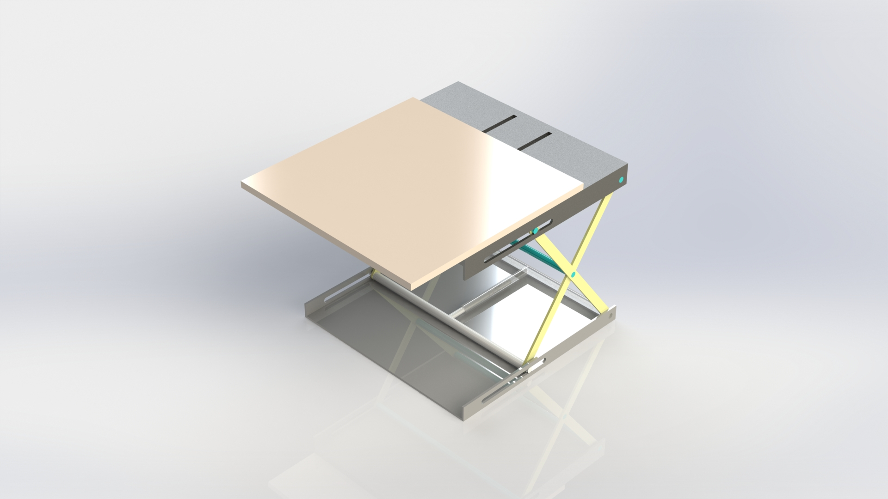
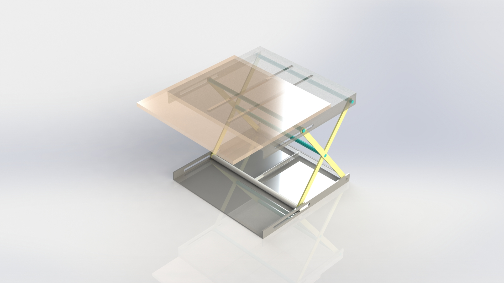
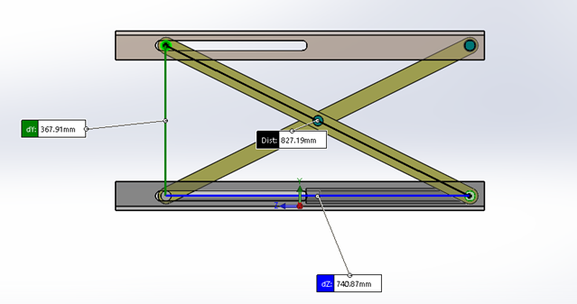
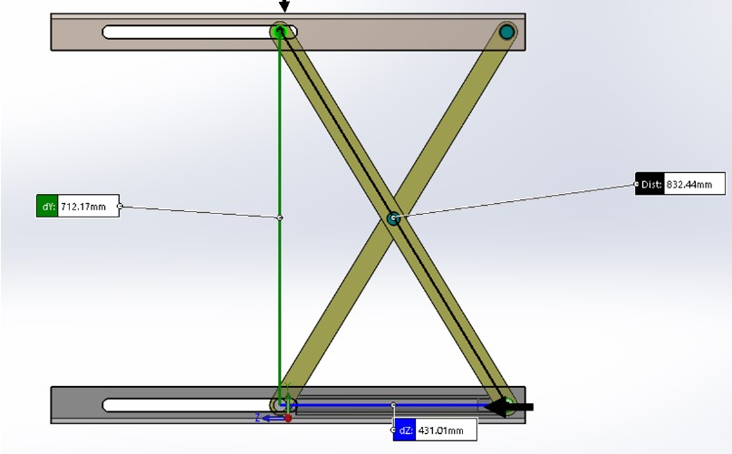

Hydraulic Lift Design
   Skills :
Description :
This research is concerned with hydraulic lifts working within the hydraulic systems, emphasizing design, installation, and working conditions of these lifting appliances. The objective is to invent a hydraulic scissor lifting system with an ability to lift a motor and other gears with the weight of 25 kg in a height of 780mm. It is in this vein that the research seeks to improve the comprehension of hydraulic lift technology, in addition to its usability.
To this end, the research comprises of the follow objectives: The research studies various past works and literature pertinent to hydraulic lift technology. Theoretical models will encompass the finding from previous empirical studies and the findings of the present study, in order to develop models of design. Also, the computer aided design and simulation tools will be used to model and analyse the proposed lifting mechanism in order to confirm the operational and safety requirements.
The ultimate goal is to develop creative solutions which directly apply to sophisticated requirements and present requirements in an Industrial setting. That way, the research targets the current and future needs of the heavy-duty hydraulic lifts to be guaranteed effectiveness in today’s ever-demanding operating settings. This work will be useful for developing hydraulic lift technology to improve equipment performance and reliability in this area.
Get in Touch
Website designed and developed by me using template provided by HTML5 UP © 2024. All rights reserved.